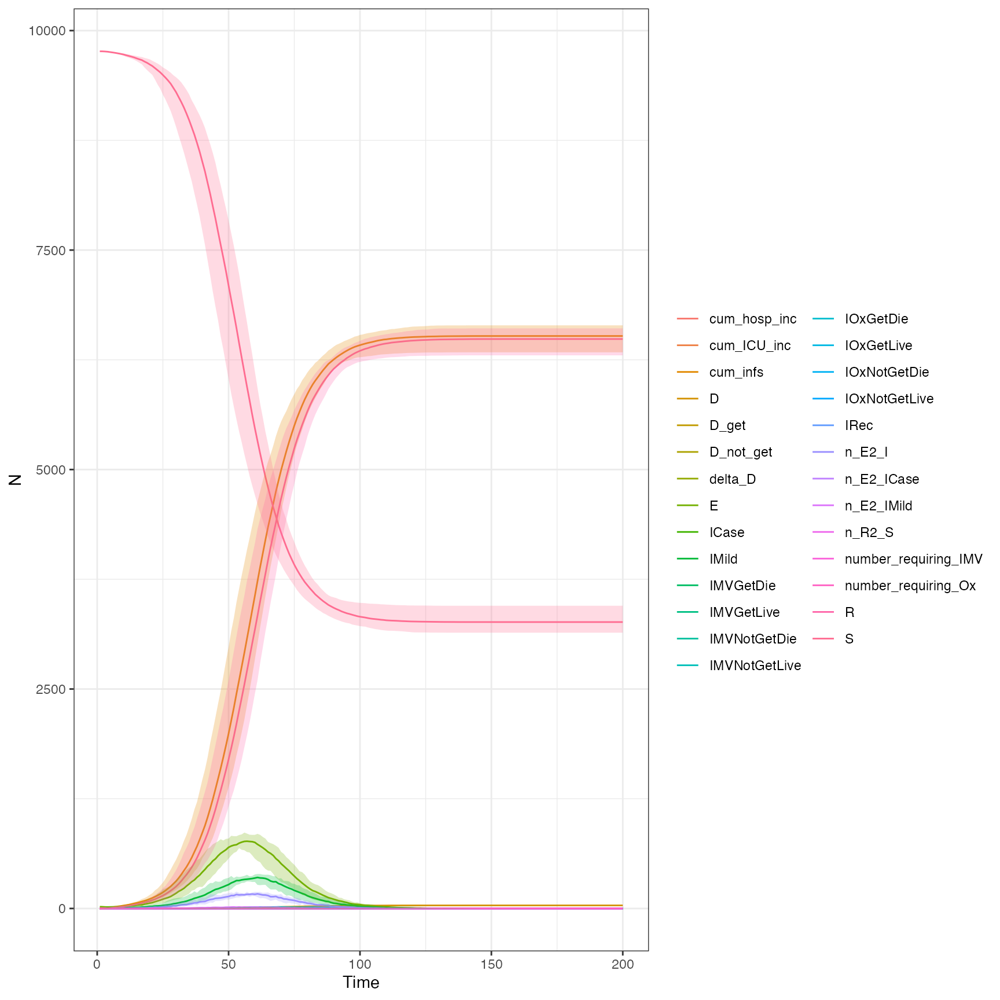
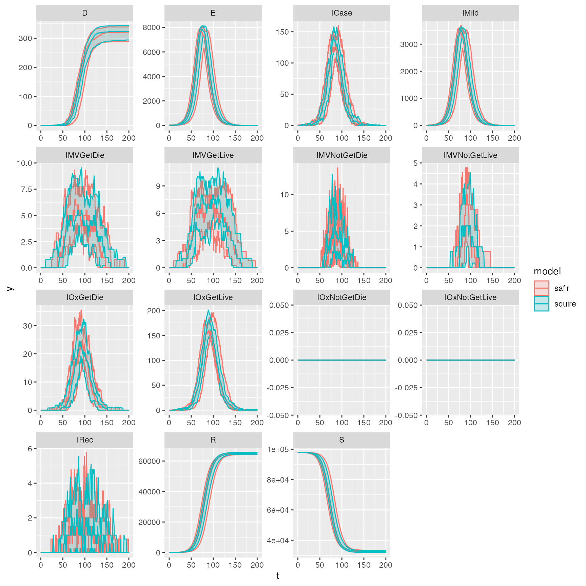
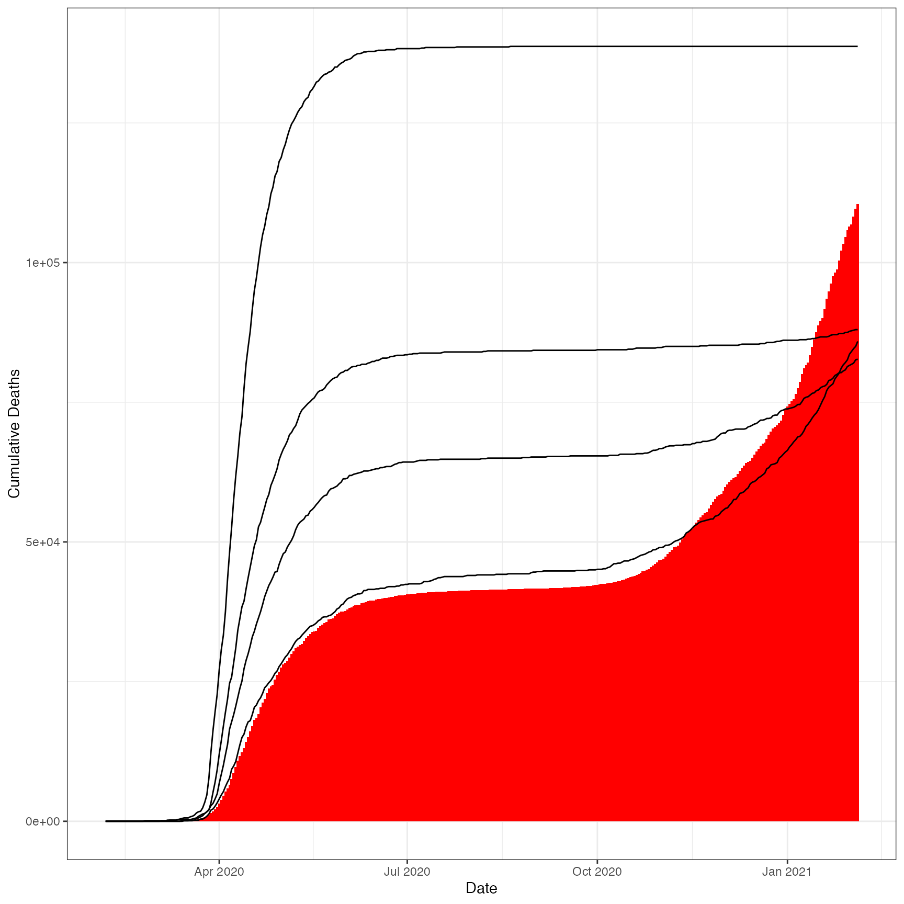

Comparison
Validation.RmdSet up our parameters for running
library(safir)
# Create our population
iso3c <- "ATG"
pop <- safir:::get_population(iso3c)
# Scale it for speed
pop$n <- as.integer(pop$n / 10)
# Create our simulation parameters
R0 <- 2
time_period <- 200
parameters <- safir::get_parameters(
population = pop$n,
contact_matrix_set = squire::get_mixing_matrix(iso3c = iso3c),
iso3c = iso3c,
R0 = R0,
time_period = time_period
)Run our simulation
df <- safir::run_simulation(pop, parameters)Plot Results
Does it look similar to the squire output:
out <- squire::run_explicit_SEEIR_model(
population = pop$n,
country = "Antigua and Barbuda",
contact_matrix_set = squire::get_mixing_matrix(iso3c = "ATG"),
time_period = 200,
replicates = 10,
day_return = TRUE,
R0 = 2,
dt = 0.1
)
plot(out)
Get the actual comparative outputs. Add IAsymp to IMild for squire.
saf <- df %>%
dplyr::mutate(IMild_count = IMild_count + IAsymp_count) %>%
dplyr::select(-IAsymp_count) %>%
tidyr::pivot_longer(-timestep) %>%
dplyr::mutate(name = gsub("(^)(\\w*)(_count)", "\\2", name),
model = "safir") %>%
dplyr::rename(t = timestep, compartment = name, y = value) %>%
dplyr::select(t, compartment, y, model)
sq <- squire::format_output(out, unique(saf$compartment))
sq <- dplyr::mutate(sq, model = "squire")
sq <- dplyr::select(sq, c("t", "compartment", "y", "model"))
ggplot2::ggplot(rbind(sq, saf), ggplot2::aes(t, y, color = model)) +
ggplot2::geom_line() +
ggplot2::facet_wrap(~compartment, scales = "free")
And check this is working properly with multiple reps
reps <- 10
saf_reps <- safir::run_simulation_replicate(
repetitions = reps,
overrides = safir:::rep_list(list("pop" = pop, "parameters" = parameters), reps)
)
saf <- saf_reps %>%
dplyr::mutate(IMild_count = IMild_count + IAsymp_count) %>%
dplyr::select(-IAsymp_count) %>%
tidyr::pivot_longer(-c(timestep, repetition)) %>%
dplyr::mutate(name = gsub("(^)(\\w*)(_count)", "\\2", name),
model = "safir") %>%
dplyr::rename(t = timestep, compartment = name, y = value) %>%
dplyr::select(t, compartment, y, model, repetition) %>%
dplyr::group_by(t, compartment, model) %>%
dplyr::summarise(ymin = min(y),
ymax = max(y),
y = median(y))
sq <- squire::format_output(out, unique(saf$compartment))
sq <- dplyr::mutate(sq, model = "squire") %>%
dplyr::group_by(t, compartment, model) %>%
dplyr::summarise(ymin = min(y),
ymax = max(y),
y = median(y))
ggplot2::ggplot(dplyr::bind_rows(sq, saf), ggplot2::aes(t, y, color = model)) +
ggplot2::geom_line() +
ggplot2::geom_ribbon(ggplot2::aes(ymin = ymin, ymax = ymax, fill = model), alpha = 0.2) +
ggplot2::geom_line() +
ggplot2::facet_wrap(~compartment, scales = "free")
And can it recreate national fits as needed (note how much more variation there is when taking a smaller pop size and trying to scale it…):
# grab the json from the data exports
iso3c <- "GBR"
file_path <- "https://raw.githubusercontent.com/mrc-ide/global-lmic-reports/master/"
country <- squire::population$country[squire::population$iso3c==iso3c][1]
json_path <- file.path(file_path,iso3c,"input_params.json")
json <- jsonlite::read_json(json_path)
betas <- vapply(json, "[[", FUN.VALUE = numeric(1), "beta_set")
# build a 100th of UK pop for simplicity
uk_pop <- safir:::get_population(iso3c)
div <- 100
uk_pop$n <- as.integer(uk_pop$n / div)
# get first 365 days of fit
uk_parameters <- safir::get_parameters(
population = uk_pop$n,
contact_matrix_set = squire::get_mixing_matrix(iso3c = iso3c),
iso3c = iso3c,
beta_set = head(betas, 365),
R0 = head(betas, 365),
dur_R = 365,
seeding_cases = 5,
tt_R0 = seq_along(head(betas, 365)),
time_period = length(head(betas, 365))
)
# run on 4 cores
reps <- 4
options("mc.cores" = 2)
saf_reps_uk <- safir::run_simulation_replicate(
repetitions = reps,
overrides = safir:::rep_list(list("pop" = uk_pop, "parameters" = uk_parameters), reps),
parallel = TRUE
)
# sort results and just filter to cumulative
saf <- saf_reps_uk %>%
dplyr::mutate(IMild_count = IMild_count + IAsymp_count) %>%
dplyr::select(-IAsymp_count) %>%
tidyr::pivot_longer(-c(timestep, repetition)) %>%
dplyr::mutate(name = gsub("(^)(\\w*)(_count)", "\\2", name),
model = "safir") %>%
dplyr::rename(t = timestep, compartment = name, y = value) %>%
dplyr::select(t, compartment, y, model, repetition) %>%
dplyr::filter(compartment == "D")
# real deaths in the UK
real <- data.frame(
"date" = as.Date(vapply(json, "[[", FUN.VALUE = character(1), "date"))[1:365],
"deaths" = cumsum(vapply(json, function(x){ if(!is.null(x$deaths)) x$deaths else 0}, numeric(1))[1:365]),
"t" = 1:365
)
# join and plot
dplyr::left_join(saf, real, "t") %>%
ggplot2::ggplot(ggplot2::aes(date, y*div, group = repetition)) +
ggplot2::geom_bar(ggplot2::aes(date, deaths, group = "real"), fill = "red",
stat = "identity", position=ggplot2::position_dodge(width = 0)) +
ggplot2::geom_line(color = "black") +
ggplot2::ylab("Cumulative Deaths") +
ggplot2::xlab("Date") +
ggplot2::theme_bw()